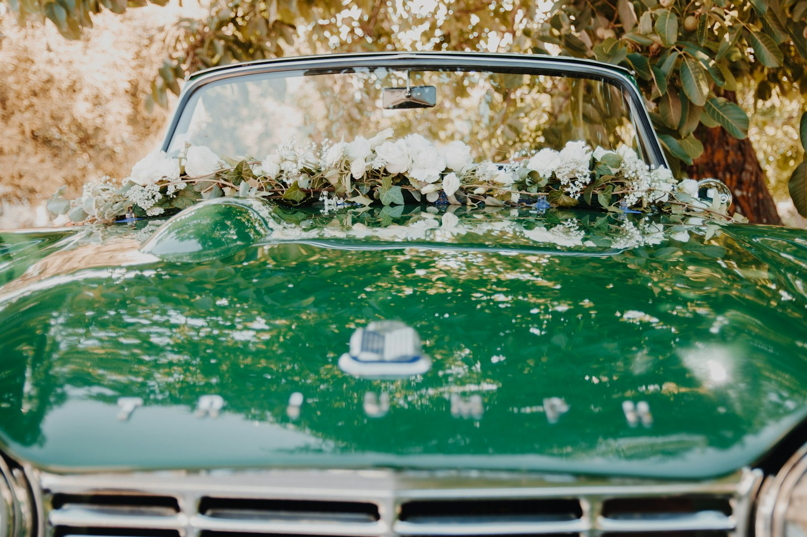
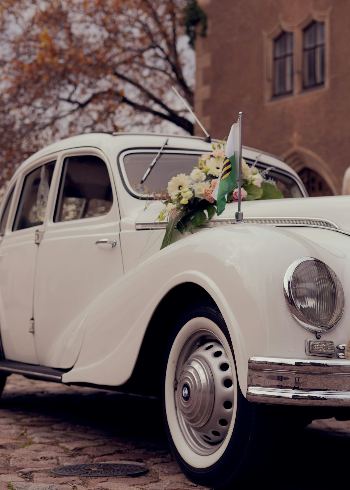
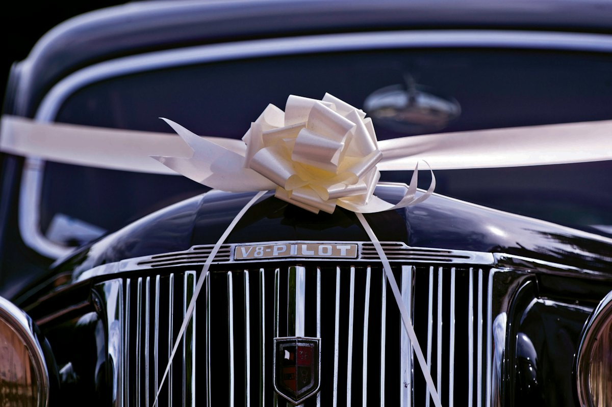
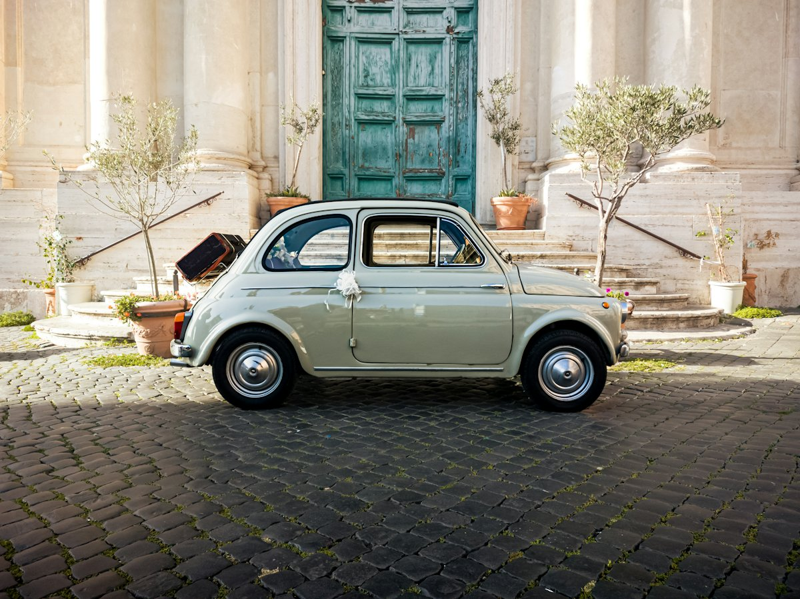
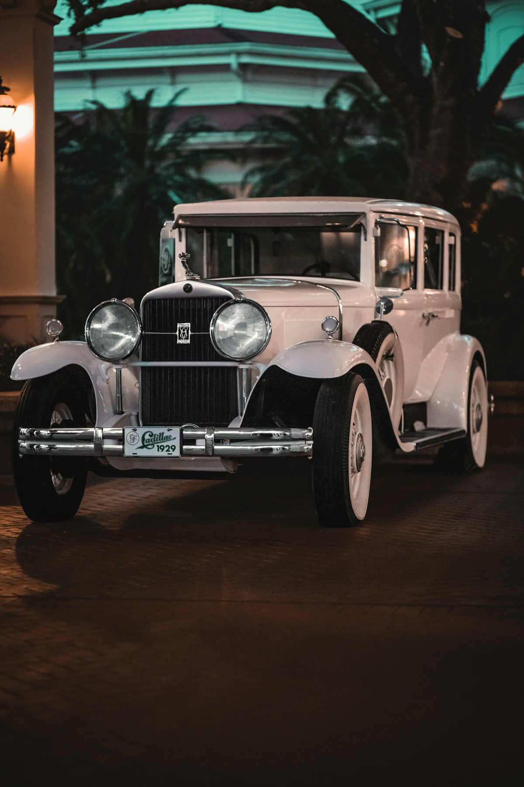
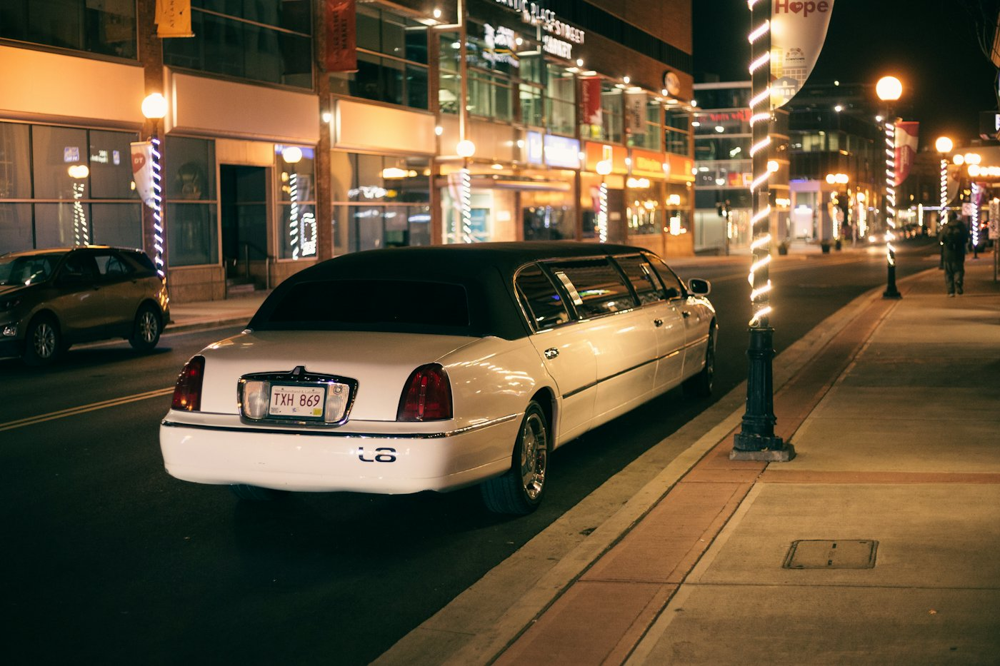

Oltre 150 auto d'epoca, di lusso e limousine per matrimoni, feste e tour della città. Qui si sceglie l'evento, l'auto e il percorso, e la richiesta arriva già completa.
Ogni occasione ha le sue auto. Scegliete l'evento: la flotta si riordina e sotto compare il percorso per Roma.
L'auto è il momento più fotografato della giornata dopo la cerimonia. Ecco la scaletta che segue chi fotografa e gira per voi: ogni evento diventa anche un post, una storia e un reel per la vostra pagina.




